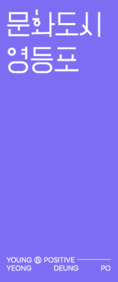

Anthropology is a discipline dedicated to understanding the unfamiliar Other. Contemporary artists, however, do not limit their field of inquiry to the other. Their explorations extend to themselves, their communities, non-human beings, and imagined futures, drawing on anthropological modes of observation and documentation. Ethnography, which is a widely used methodology in cultural anthropology, involves observing life within a community situated in a particular geopolitical and spatio-temporal context, often through sustained participation and documentation. Developed in the West through the study of the non-West during the colonial era, this method is now undergoing significant shifts in both its objects of inquiry and its modes of engagement, as the conditions and trajectories of contemporary civilization undergo transformation. While the defining question of the previous century — “What is the human?” — presupposed an understanding of humanity grounded in evolutionary biology and the social sciences, today's question — “Are humans we?” — destabilizes these assumptions, compelling us to reconsider both the boundaries of “we” and the conditions under which such a question can be asked.
The three pillars that have structured civilization — the natural environment, urban culture, and technological development — are now being fundamentally reconfigured through their entanglement with artificial intelligence, newly synthesized material environments, and previously overlooked non-human beings and planetary conditions. These transformations, accelerated by global turning points such as the pandemic and the climate crisis, signal not only the convergence of art and technology, but a more fundamental reconfiguration of the contemporary artistic landscape, in which each continually conditions and reshapes the other. Against this backdrop, the exhibition positions the artist not simply as a cultural producer, but as a practical actor exploring the technological, environmental, and social conditions of the present, or, in other words, anthropologists. They no longer confine themselves to observing external Others. Their field of inquiry now encompasses the alterity embedded within the self and community; non-human beings and planetary conditions that challenge anthropocentric ontologies; anthropomorphized technologies and proliferating artificial objects; as well as futures yet to arrive and temporalities that precede human experience.
The exhibition entitled Doing Anthropology: Are Humans We? brings together artistic research and technological collaborations developed since spring, creating a temporary site in which the complex landscapes of the human emerge. Each artist has developed a distinctive ethnography from audio-visual archives assembled through sensations, data, narratives, and technological mediations gathered from their own lives and environments. These artistic ethnographies serve not merely as modes of observation and documentation, but as contemporary analytical languages reconfigured within the technological conditions of artificial intelligence, interfaces, and data structures. They seek to renew our understanding of the world, ourselves, and what lies beyond established boundaries through some of the most fundamental human practices such as walking, following, speaking, listening, writing and erasing, and repetitive labor. In Korea, where ethnic homogeneity and socially consolidated systems of meaning exert considerable influence, such approaches turn attention inward rather than outward.
The exhibition therefore understands “the human” not as a fixed category but as a process continuously reconstructed through relationships with technology, environments, and a multiplicity of beings. Viewers are invited to reconsider their own positions within the experiences of others as they move among these multilayered records and narratives, and to reflect on the conditions of the present as they imagine the future. By entering the exhibition, we may briefly become contemporary anthropologists, observing our own lives and the world anew, and considering the distance between the community we call “we” and the universal category of “the human.” There, we retrace the trajectories and the position of various actors that have too often been overlooked, ultimately returning to the question of the human. Perhaps practicing anthropology is not a matter of moving endlessly toward the Other, but of encountering the human again, as something unfamiliar.
Curated by Juri Cho
Artists , , , , , , , , , , ,
Chong Kun Dang Kochon Foundation, Life Sciences and Arts Education Program [Bio Odyssey: In Search of Phantom Yeast]
Tap a card to register.
Each program seats 15 (first come, first served), up to 4 people per registration. All programs are free.
All programs are free of charge. Priority seating will be given to those who register in advance, while walk-in visitors may also be admitted depending on availability. If you are unable to attend after registering, please cancel your reservation. Should the schedule or content of a program change due to unforeseen circumstances or to the organizer’s situation, we will announce it in advance through the official Culture City Yeongdeungpo social media (@cultural_city_ydp).
Visited the exhibition? Please take 3 minutes to share your thoughts.
Participants receive a 🇨🇭 Swiss-made PIGRA pen.
CEO | Lee Geon-wang
Director | Kim Ji-hoon
Culture City Planning Team | Moon Yoo-seok
Culture City Planning Team | Byun Chae-rin
Curator | Cho Juri
Editor | Lee Yeon-ji
Heesoo Kwon, Siheun Kim, Gemini Kim, Dew Kim, Jaeha Ban, Chang Younghae, Jongwan Jang, Youngkak Cho, Sla Joo, Kayoung Choi, Che Go Eun, Sun Choi, Chong Kun Dang Kochon Foundation Life Sciences and Arts Education Program [Bio Odyssey: In Search of Phantom Yeast]
Operating Agency | From A Co., Ltd.
Operations | Cho Ah-ra
Public Relations | Yang Chaiwon
Graphic Design | Waterain
Spatial Design & Production | Think & Make
Video Filming & Editing | Height and Width
Hosted & Organized by | Yeongdeungpo-gu Office, Yeongdeungpo Cultural Foundation, Yeongdeungpo Culture City Center
In Cooperation with | CKD Kochon Foundation, Jongdo Building